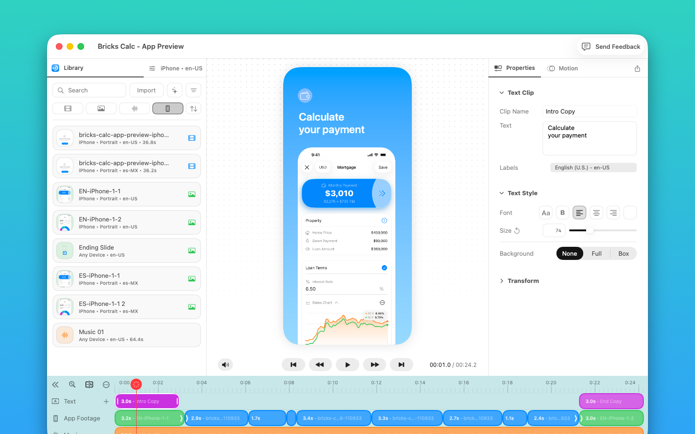

Drop.
Import screenshots, screen recordings, images, audio, and brand assets from Finder.
Start with the app media you already have.
A Mac app built for App Preview videos.
From screenshots and recordings to App Store Connect in one focused workflow.

Drop, edit, and upload from one focused Mac workflow.
Import screenshots, screen recordings, images, audio, and brand assets from Finder.
Start with the app media you already have.
Arrange clips, add text, adjust timing, and polish the preview on a focused timeline made for App Store.
You get the tools you need for preview production, without the extra weight of a full editing software.
Run App Preview checks, export H.264 or ProRes 422 HQ, or upload directly to App Store Connect.
Connect your app once, then publish every update from the same workflow.
Replace media, start from an editable draft, and manage every version without rebuilding the project.
App Preview Editor uses the Mac workflows you already know: Finder drag and drop, familiar shortcuts, Keychain credential storage, and system notifications.
Stay focused on your App instead of learning another editing software.
No. It is focused on creating and delivering App Preview videos.
That is the point. It keeps the workflow smaller, clearer, and closer to what app developers actually need.
Indie Apple developers, small app teams, product designers, app marketers, and ASO teams who need to create App Preview videos without using a full editing suite.
Yes, when your App Store Connect API credentials and app targets are configured.
The app can load preview slots and upload previews from the same workflow.
Yes. You can keep platform and language versions together in the same project.
Yes. You can replace or relink screenshots and recordings while preserving your edit.
It is designed for App Preview workflows across iPhone, iPad, Mac, and Apple Vision Pro.
Smart Actions use Apple Foundation Models on supported Macs to help create a first editable draft from your media.
Every result remains editable. It is a starting point, not an automatic finished video generator.
No. App Preview Editor helps you prepare and check preview files, but it does not guarantee App Store approval.
Join the waitlist or participate in the beta.